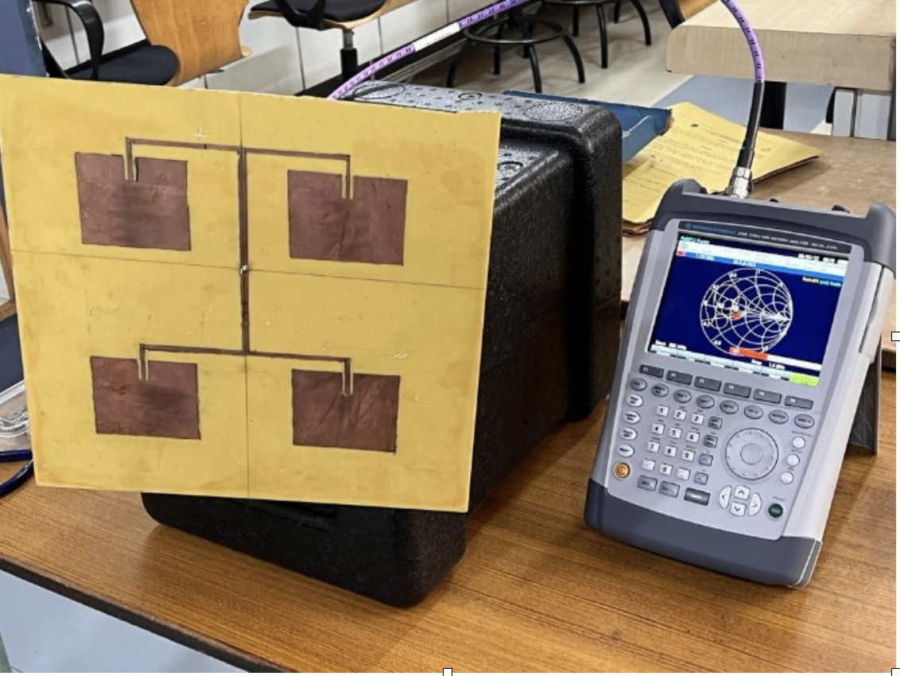

2025
2025
Aura, Accessible Shopping Assistant
An accessibility-focused platform for blind and low-vision users combining fabric scanning, haptic feedback, and a personalized digital closet to enable independent, nonvisual fashion exploration.
2025
An accessibility-focused platform for blind and low-vision users combining fabric scanning, haptic feedback, and a personalized digital closet to enable independent, nonvisual fashion exploration.
 2025
2025
A behavioral experiment (N=30) replicating Asch's conformity paradigm in a human-AI setting, revealing that hybrid human-AI social cues drive stronger conformity signals than either alone.
An applied machine learning study predicting industrial machine failures using IoT sensor data, tackling severe class imbalance and nonlinear sensor interactions through model benchmarking, error analysis, and robustness evaluation to enable cost-effective, condition-based maintenance.
 2019
2019
A portable, non-invasive heart rate monitoring system built on Arduino, measuring real-time BPM via pulse sensors and displaying results on an LCD interface, designed for accessible, cost-effective healthcare monitoring.

2022Designed and simulated a 2x2 Rectangular Microstrip Array Antenna for 1.2 GHz applications, including radar, satellite, and 4G/LTE, achieving matched resonant frequency and superior gain performance over a single microstrip antenna using IE3D simulation software.